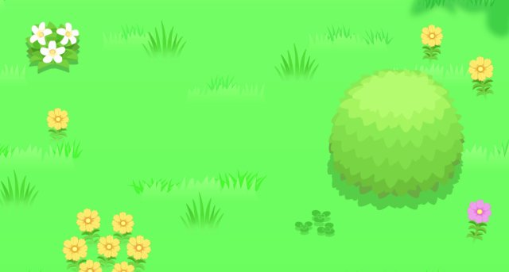
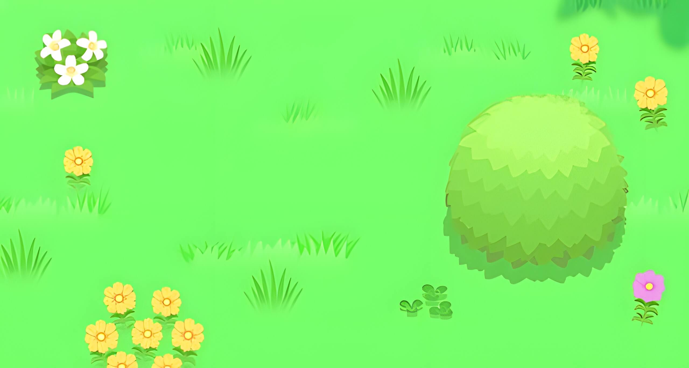
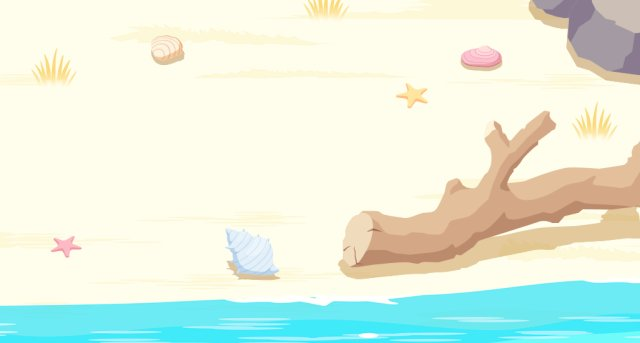
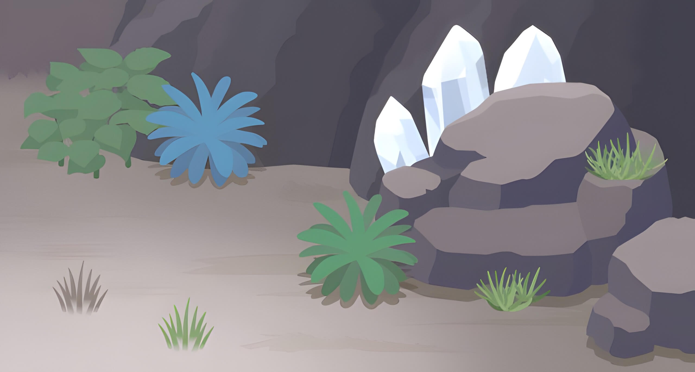
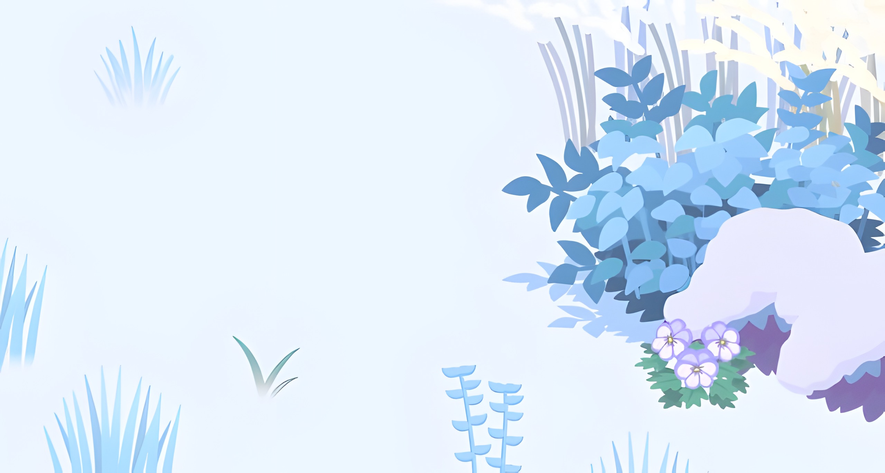
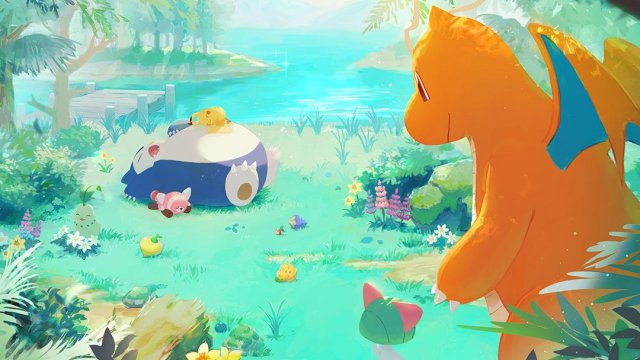
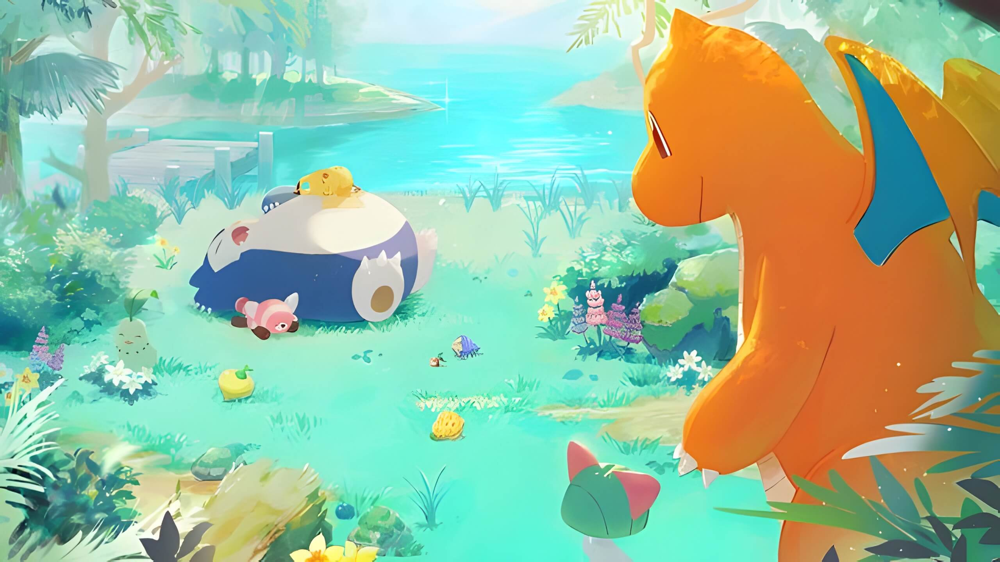
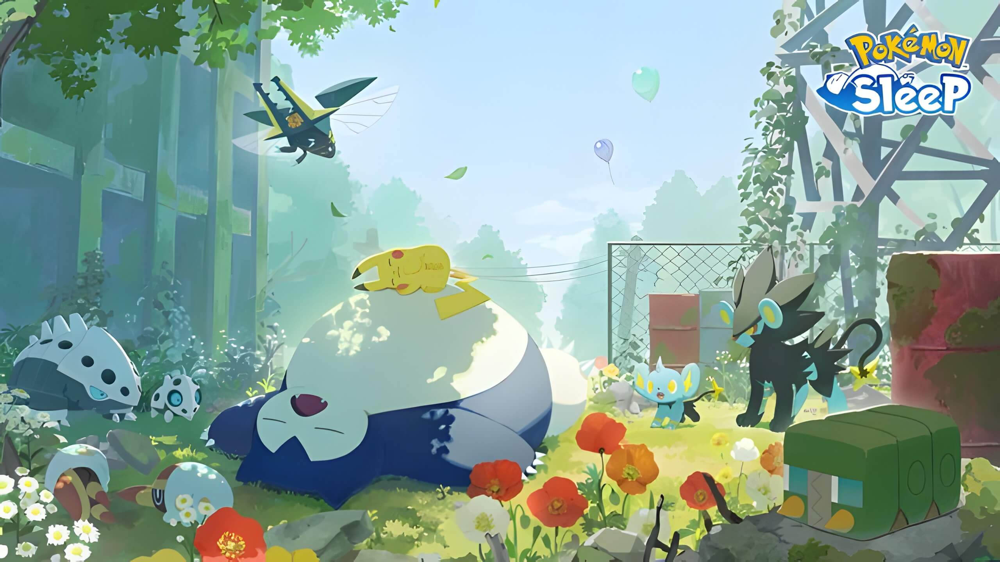
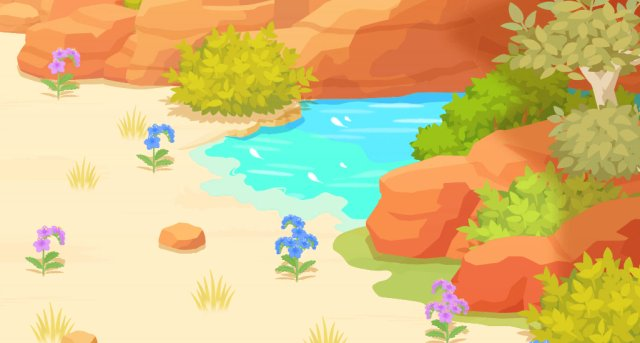
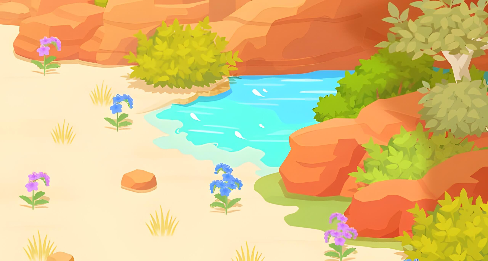

左欄是 Serebii 原圖（約 640x343）。右欄是 AI 超解析後的本地檔（約 2560x1372）。路徑相對於專案根目錄。
assets/islands/original/greengrassisle-location.jpg
assets/islands/hd/greengrass.jpg
assets/islands/original/cyanbeach-location.jpg
assets/islands/hd/cyan.jpgassets/islands/original/taupehollow-location.jpgassets/islands/hd/taupe.jpg
assets/islands/original/snowdroptundra-location.jpgassets/islands/hd/snowdrop.jpg
assets/islands/original/lapislakeside-location.jpg
assets/islands/hd/lapis.jpg
assets/islands/original/oldgoldpowerplant-location.jpgassets/islands/hd/oldgold.jpg
assets/islands/original/ambercanyon-location.jpg
assets/islands/hd/amber.jpg